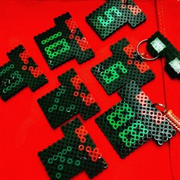
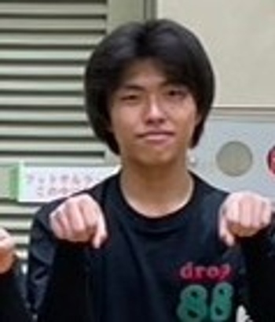
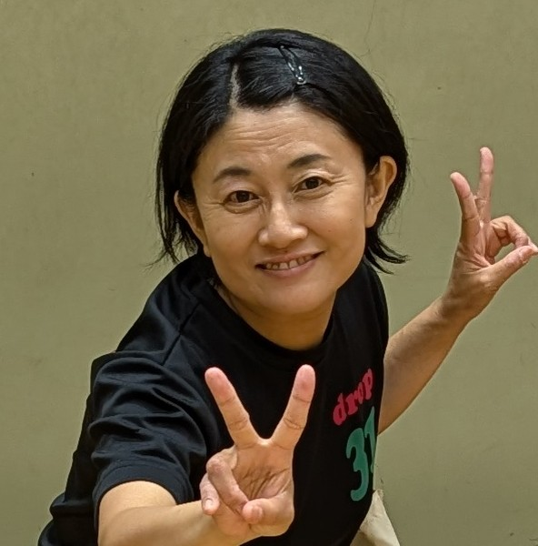
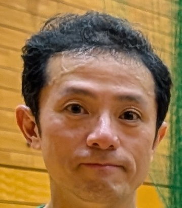
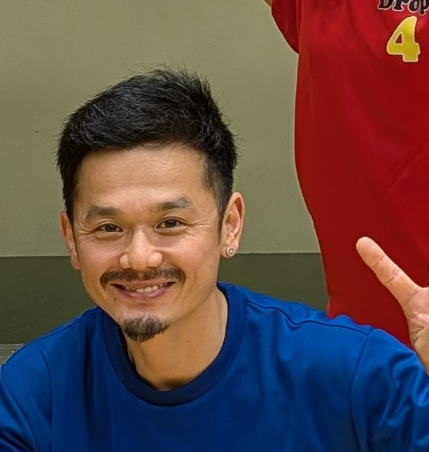
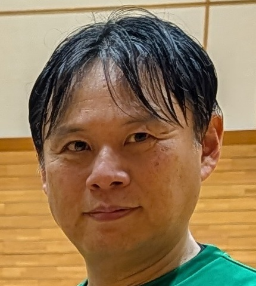
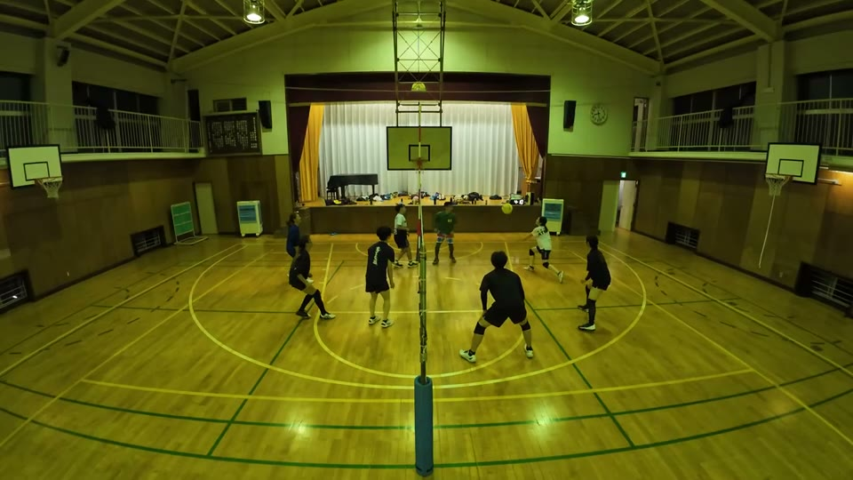
ゆきよ のレシーブ 48:46
こうすけ のジャンプトス 48:48
るき のアタック 48:50
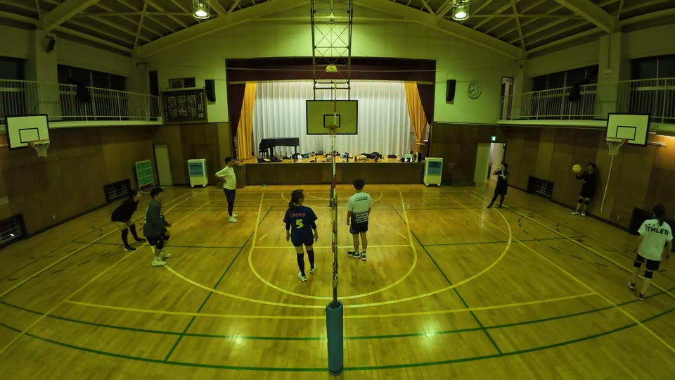
るき のサーブ 2:56
るき のアタック 3:25 6:01 23:31 54:19 83:43
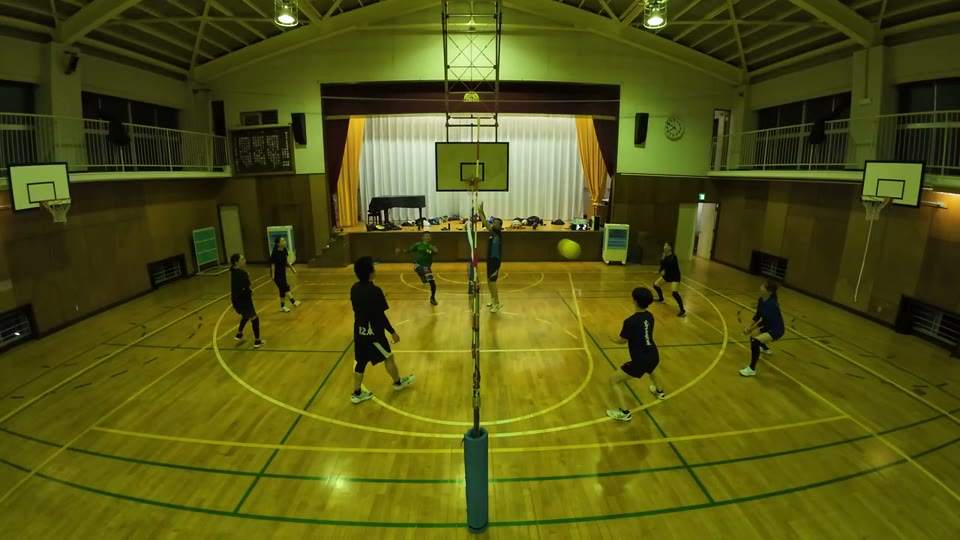
こうすけ のレシーブ 11:49 18:16 45:30 54:13
まゆみ のレシーブ 34:49 37:08 38:33
ゆきよ のレシーブ 45:35 47:26 53:18
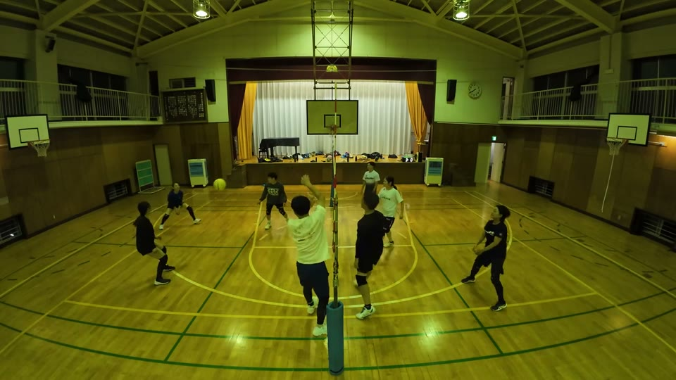
かずえ のレシーブ 1:06 19:05 49:28
きりちゃん のレシーブ 16:45 16:50 39:05
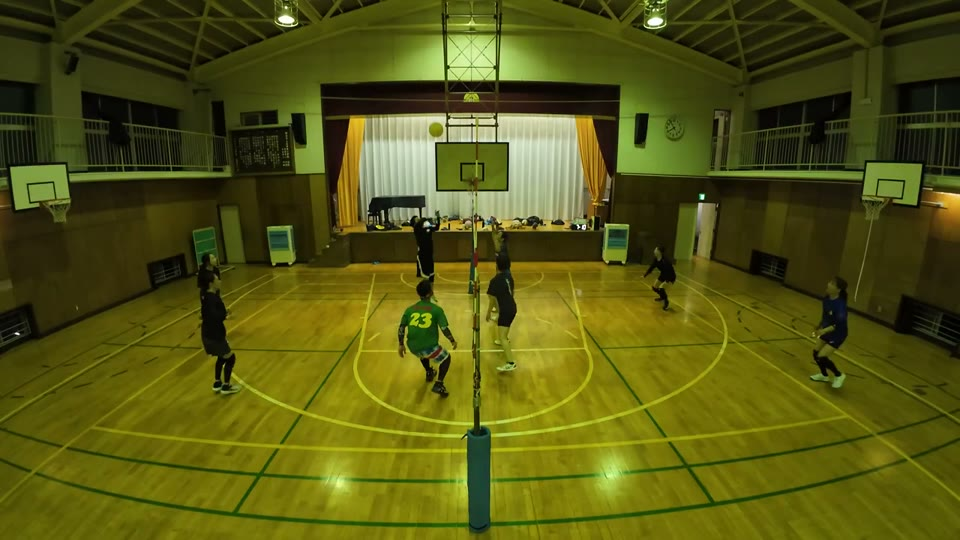
まゆみ のトス 15:28 58:50
りる のトス 15:47 28:11 47:05 50:18 69:10
まゆみ のバックトス 78:58
りる のジャッジ 82:42
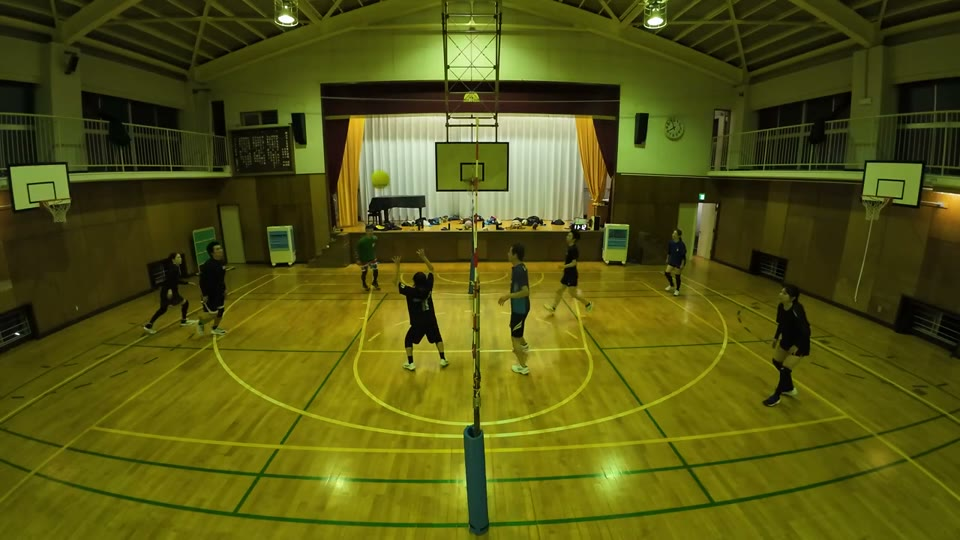
きりちゃん のトス 17:38 38:34
あき のトス 28:50 53:47 53:52 70:03
あき のサーブ 58:51 59:38
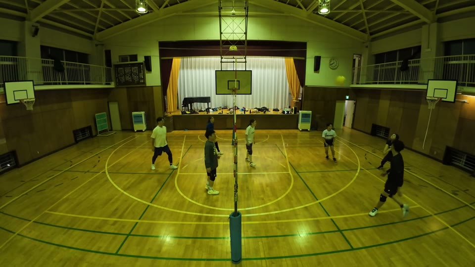
ゆりこ のジャッジ 2:03
ゆりこ のレシーブ 5:18 58:32
ゆりこ のトス 26:59 61:05 72:56
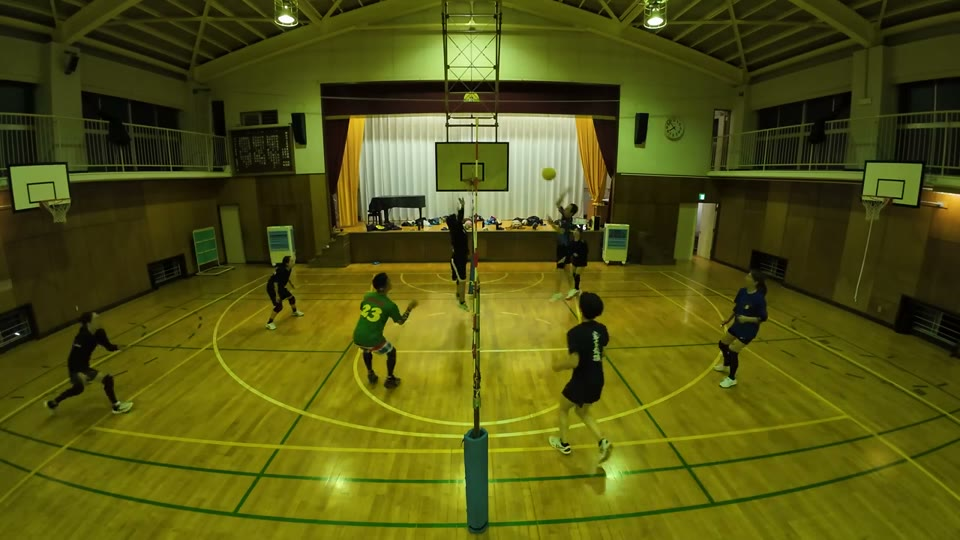
かずお のアタック 14:22 61:07 63:29
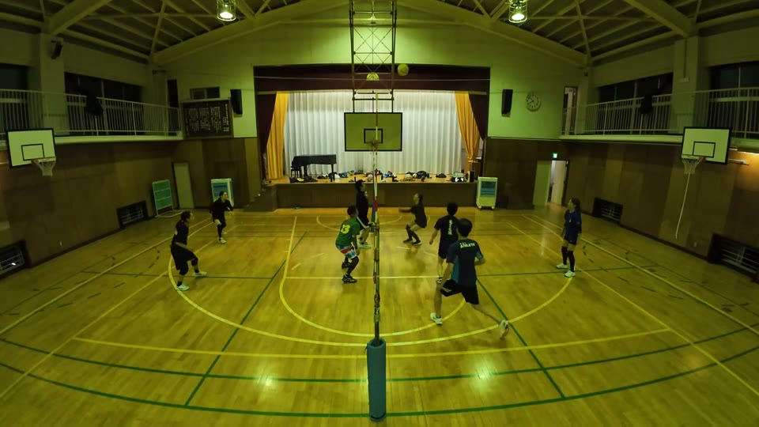
りる のアタック 13:13
やっさん のフェイント 16:04 50:54
やっさん のアタック 17:39 18:23 47:06 70:04
りる のフェイント 69:46
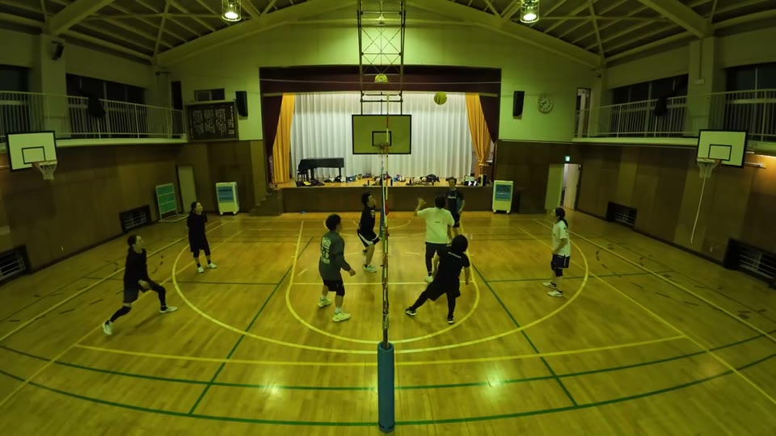
けん のアタック 58:34
けん のフェイント 60:30 61:57
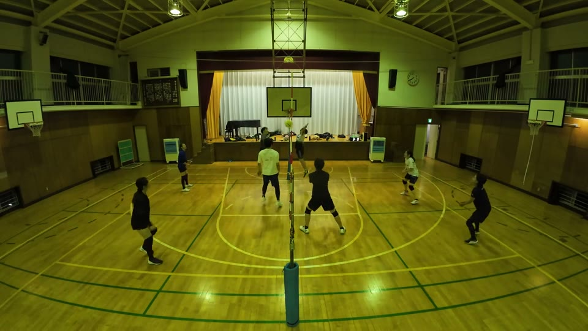
たくや のアタック 1:08 58:51 78:59
まーくん のアタック 15:28 16:53 35:32
みなと のアタック 49:09
Produced by けんぴー(AI)